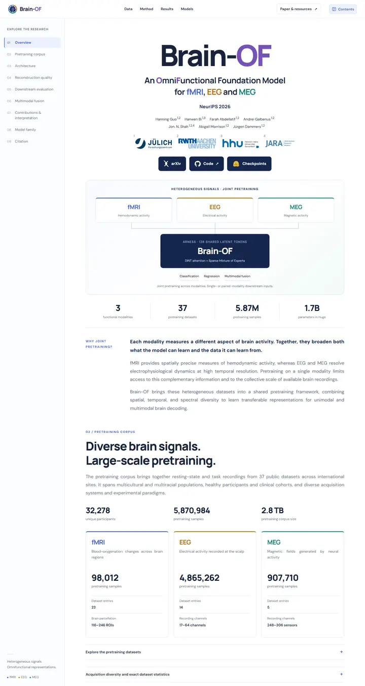

Brain-OF: An Omnifunctional Foundation Model for fMRI, EEG and MEG
ラベルの行き届いた地図帳。ネイビーのサイドバー索引、決して混ざらない3つの信号色、整ったカードに積まれた大きな数字。

表示されたページと照合済みです。
選んだ理由
左側に固定の目次を置いたドキュメント風のレイアウトです。モダリティごとに色分けしたタイポグラフィがタイトル、模式図、統計カードまで一貫しており、大きな数字のデータカードが体系的な個性を与えています。
以下の説明と DESIGN.md 本文は英語です。コーディングエージェントが同じ一つの版を読めるよう、翻訳していません。
概要
カラーパレット
タイポグラフィ
Manrope
Brain-OF: An Omnifunctional Foundation Model for fMRI, EEG and MEG
Abstract · Method · Results · BibTeX — 0123456789
DM Sans
Brain-OF: An Omnifunctional Foundation Model for fMRI, EEG and MEG
Abstract · Method · Results · BibTeX — 0123456789
余白と形
ページの構成要素
ガイドライン
似たスタイル

CRAFT: Training-Free Cascaded Retrieval for Tabular QA
淡い青焼きブルーの整った製品マニュアル。どの段階もそれぞれの色の縁をまとっている。

Efficient Self-Evaluation for Diffusion Language Models via Sequence Regeneration
青、すみれ、アプリコットの夜明け色に染まった角丸カードの整った積み重ね。署名はグラデーションのワードマーク。

FIGMA: Towards FIne-Grained Music retrievAl
温かみのある紙に刷った音楽誌。赤いキッカーの下に重厚な Newsreader の見出し、結果を示す大きな赤いセリフ数字、柔らかなクリーム色の枠に収まった図。

GuideDog: A Real-World Egocentric Multimodal Dataset for Blind and Low-Vision Accessibility-Aware Guidance
静かな学術書の一頁。セリフ体の一段組み、リンクには牛血色のインク、自分の行だけをほんのり染める表。

LaMI: Augmenting Large Language Models via Late Multi-Image Fusion
丁寧に作られた学会配布資料。Noto Serif の見出し、ネイビーの枠線ボタン、交互に現れる柔らかなグレーの帯。

PairCoder++: Pair Programming as a Universal Paradigm for Verified Code-Driven Multimodal and Structured-Artifact Generation
すっきりとした白い製品ページ。青いお知らせの帯、墨のように黒いピル型ボタン、柔らかな影のカードに載ったすべての図。